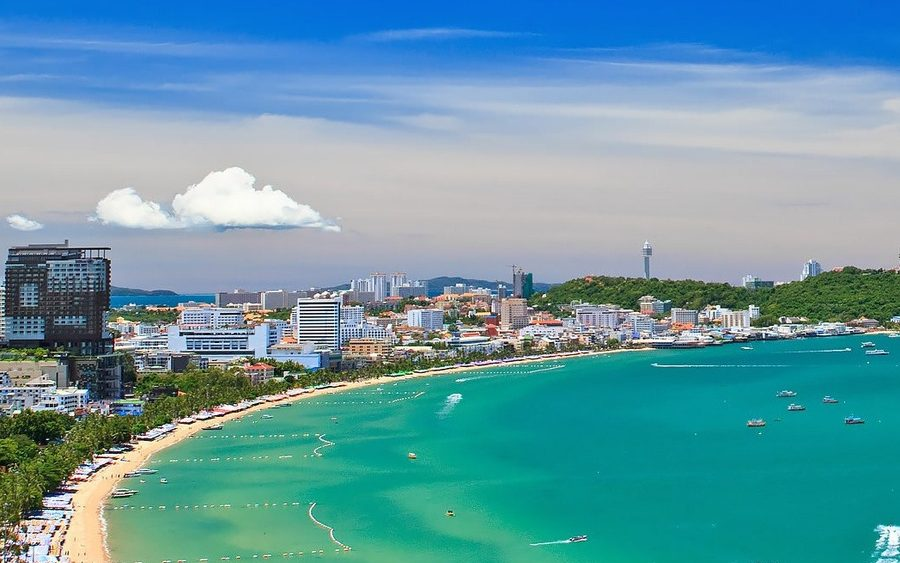
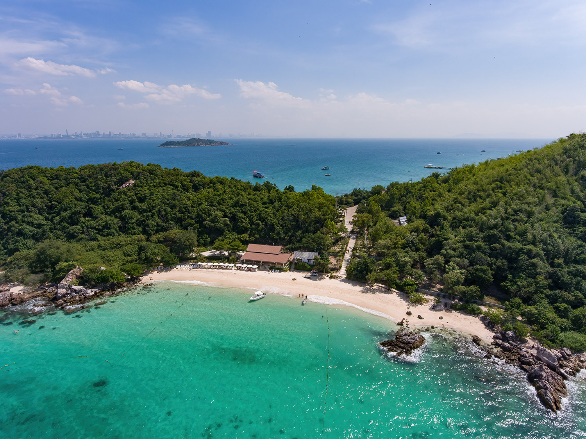

Guide • Coastal Life
17 Things Actually Worth Doing in Pattaya — Rated by People Who Live Here
Published 7 July 2026 • 10 min read

Every travel blog on the internet will tell you Pattaya is "so much more than its nightlife reputation." They're right, but they usually say it from a hotel desk in another country. We live here. So here's the same list every guide runs — temples, viewpoints, markets, water parks, the island — but with the parts other sites leave out: what things cost in hassle, when to go, and which "must-sees" you can happily skip. Straight talk.
1. The Sanctuary of Truth
The one attraction in this city that genuinely deserves the word "unmissable." An enormous temple-palace on the Naklua waterfront built entirely of carved wood — no concrete, barely a nail — and still under construction since 1981. Carvers work on site daily using old tongue-and-groove and dovetail joinery, so the building is both a monument and a live workshop. Take the guided tour; without it, the forest of carvings is just pretty. With it, the whole philosophy of the place — seven creators, four wings, one very stubborn vision — clicks into focus.
Straight talk: go in the morning before the tour buses, and yes, it's worth the ticket price even when you've seen fifty temples.
2. Mini Siam
A park of 1:25 scale models on Sukhumvit Road, half Thai heritage (Wat Arun, Wat Phra Kaew, Ayutthaya's ruins, the River Kwai bridge), half world landmarks (the Eiffel Tower an easy stroll from the Colosseum). It sounds like a tourist trap. It's actually a sneaky-good crash course in Thai architectural history, and kids love it.
Straight talk: arrive late afternoon. You get daylight photos, then the whole miniature world lights up after dark — that's the version worth seeing.
3. Terminal 21
A mall built like an airport, with a full-size plane parked out front and each floor themed as a different city — Paris, London, Tokyo, San Francisco. Silly? Completely. But it's the best free air-conditioning in Pattaya, the themed bathrooms are a legitimate photo stop, and the Pier 21 food court on the third floor serves proper Thai food at close-to-street prices in comfort. Locals eat there. That tells you everything.
4. Alcazar Cabaret
Running since 1981 and still packing a 1,200-seat theatre nightly. Seventy minutes, around seventeen acts, costumes that must be seen to be believed, and choreography that swings from classical Thai to Bollywood without blinking. It's family-friendly and slickly professional — this is showbusiness, not sleaze.
Straight talk: Alcazar and Tiffany's are the two big cabarets in town and the rivalry is real. You won't go wrong with either; you'll pay for the post-show photos with performers, so have small notes ready.
5. Pattaya Beach
The 3-kilometre crescent where the whole story started. The recent renovation genuinely improved it — wider sand, a proper promenade — and the location is unbeatable: you can go from sunbed to shopping mall to seafood dinner in ten minutes on foot. It is not a desert-island postcard and never will be. It's an urban beach, and judged as one, it's good.
Straight talk: swim mornings, walk the promenade at sunset, and agree the jet-ski price (and film the machine's condition) before you touch it. You know why.
6. Walking Street
Yes, it's the neon gauntlet you've seen on YouTube. It's also, quietly, home to some of the best bay-view seafood in the city — King Seafood and Nang Nual have been feeding families over the water for decades — plus live-music bars and a free open-air Muay Thai ring midway down. The street closes to traffic every evening, and even if you're not a nightlife person it's worth one slow lap for the spectacle alone.
Straight talk: eat early, watch the fights, keep your phone in a front pocket, and everything after 11pm is your own business.
7. Phra Tamnak Viewpoint
The classic panorama — the entire bay curling away beneath you from the hill between South Pattaya and Jomtien, on Royal Thai Navy land next to Wat Khao Phra Bat. The big red-and-white PATTAYA sign does its Hollywood impression here, and the Chaloem Phrakiat park trails give you quieter coastal views if the sign platform is mobbed.
Straight talk: a baht bus won't take you up as part of its normal route — walk up from Walking Street's south end (sweaty, 20 minutes) or negotiate a charter. Go for golden hour.
8. 3 Mermaids
The Pratumnak Hill café that ate Instagram: 500-plus seats terraced over the sea, dining "bird's nests" perched in the trees, a mermaid statue you pose on, and a live band as the sun drops into the Gulf. Is it a photo factory? Absolutely. Is the sunset still magnificent and the seafood decent? Also yes.
Straight talk: book a nest ahead if you want the famous shot, and arrive well before sunset — so does everyone else.
9. Wat Phra Yai — the Big Buddha
An 18-metre golden Buddha has watched over the city from Pratumnak Hill since 1977, up a staircase flanked by seven-headed naga serpents. It's the easiest dose of calm in Pattaya: climb, ring the row of bells with the wooden mallets, make merit if you're moved to, and look back over the town that carries on below.
Straight talk: shoulders and knees covered, shoes off where signed, and go early — the hill gives no shade at noon.
10. Thepprasit Night Market
Pattaya's biggest and most local market, on the Jomtien side. Hundreds of stalls, and the food is the point: Thai barbecue, noodle soups, grilled squid, mango sticky rice, and khao gaeng stalls where you point at three curries over rice and pay pocket change. Dinner for two costs less than one resort cocktail.
Straight talk: this is where we send everyone who says they want "real" Pattaya. Weekends are liveliest and most crowded. Bring cash.
11. Jomtien Beach
Six kilometres of calmer everything, one hill south of the action. Fewer speedboats, wider sand, windsurfing and sailing clubs at the northern end, a beachfront that's long been LGBTQ+ friendly, and its own night market. If Pattaya Beach is the show, Jomtien is where people actually live — we've written a whole love letter to it.
12. Pattaya Floating Market
A built-for-tourists recreation of canal life, split into four zones for Thailand's four regions, with boat vendors, wooden walkways and cultural shows. It's the largest floating market in the East — and it is thoroughly, unapologetically an attraction rather than a working market.
Straight talk: if you've done Bangkok's canal markets, skip it. If Pattaya is your only Thailand stop, it's a painless sampler of regional food and crafts in one place. Agree boat prices first.
13. Viharn Sien (Anek Kusala Sala)
The attraction nobody's heard of that everybody thanks us for. A Thai-Chinese museum built in 1987 on land granted by King Rama IX, holding genuine terracotta-warrior replicas from Xi'an — some gifted by the Chinese government — plus bronze Shaolin monks frozen mid-form, jade carvings and pottery going back 3,000 years. It sits near Khao Chi Chan, so pair the two.
Straight talk: quiet, cool, cheap, and almost empty on weekdays. The sleeper hit of this entire list.
14. Nong Nooch Tropical Garden
A 1,700-rai botanical empire with one of the world's most serious palm and cycad collections — and, because this is Thailand, a valley of 1,200-plus life-size dinosaur sculptures next to a French formal garden and a replica Stonehenge. Daily cultural shows, a car museum, elevated skywalks. You could lose a full day here without trying.
Straight talk: it's big enough that the shuttle tram is worth it in hot season. We'd politely suggest enjoying the gardens and giving the elephant show a miss.
15. Khao Chi Chan — Buddha Mountain
A 130-metre Buddha traced in gold leaf into a sheer limestone cliff — carved by laser in 1996 to honour King Rama IX, turning a scarred old quarry into one of the region's most arresting sights. You view it across a lotus pond from landscaped gardens at the base.
Straight talk: morning light hits the cliff face straight on — that's your photo. Fifteen minutes is enough, which is why you combine it with Viharn Sien and the vineyards next door.
16. Ramayana Water Park
Thailand's biggest water park and regularly rated among Asia's best: 26 slides across 100 rai, themed loosely on the Ramayana epic. The AquaLoop does a full 360-degree loop, the 240-metre Aqua Coaster is one of the longest anywhere, and the family fortress and 600-metre lazy river mean kids from 106cm tall can ride nearly everything.
Straight talk: weekdays in low season you'll walk onto every slide. Worth the taxi out of town — it's near Khao Chi Chan, so an ambitious family can do mountain, museum and water park in one day.
17. Koh Larn
The escape hatch. The ferry from Bali Hai Pier costs next to nothing and takes about 45 minutes (speedboats do it in 15 for more baht), and suddenly you're on clear water and white sand that central Pattaya simply cannot offer. Six beaches, each with its own personality: Tawaen for action and water sports, Tien for quiet swimming, Samae for the long scenic stretch. Rent a scooter, find the windmill viewpoint, drink coffee over the water and watch the Pattaya skyline shimmer across the strait.
Straight talk: catch an early ferry and come back at sunset — day-trippers who arrive at noon see the island at its most crowded. Better yet, stay a night; the island after the last boat leaves is a different place entirely.

The bottom line
Pattaya's dirty secret is that it's a genuinely good all-round destination wearing a leather jacket. Carved-teak temples, a cliff-face Buddha, world-class gardens, Asia's best water park and a proper island — all inside an hour of your hotel, all reachable by 15-baht songthaew and a bit of nerve. Budget it properly with ThaiHolidayBudget, and if the city gets its hooks in you — it does that — ThaiVisaFinder will tell you how long you can legally keep saying "one more week."